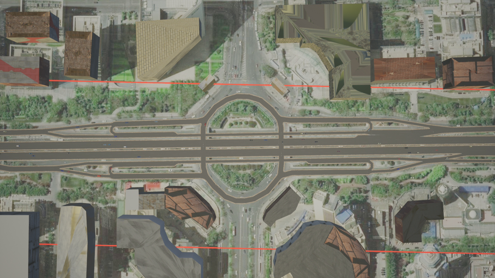
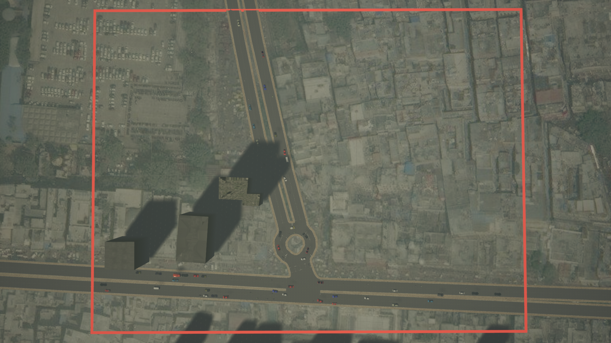
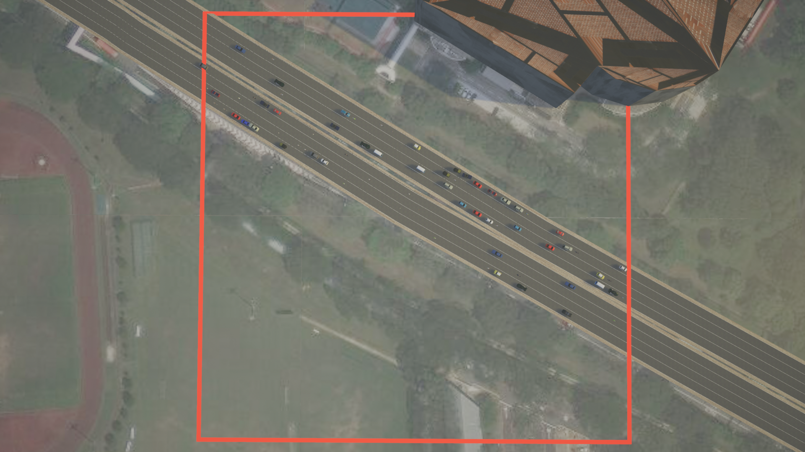
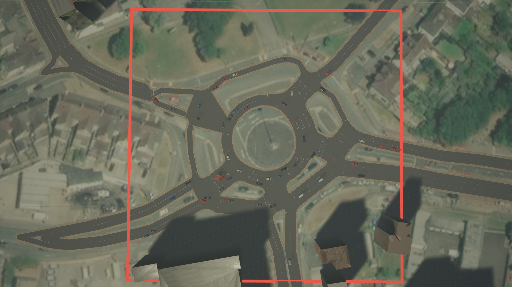
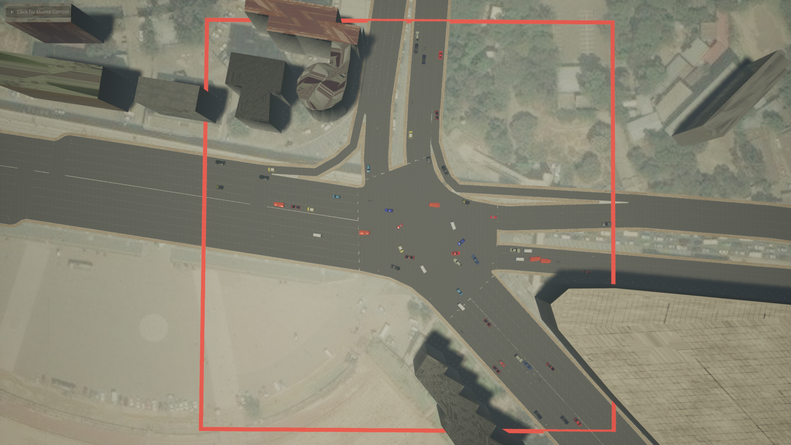
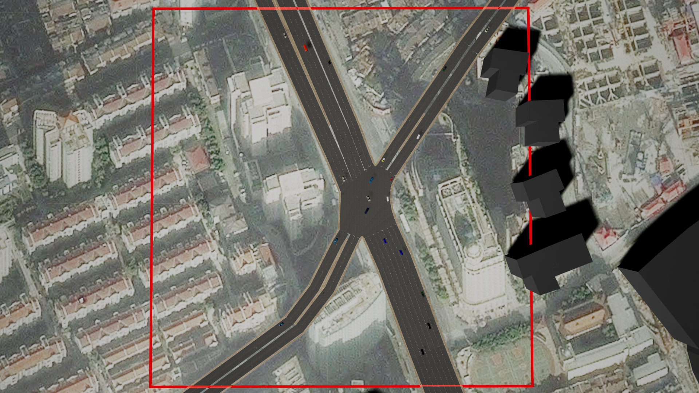
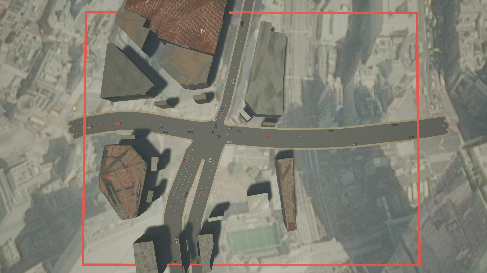

SUMMIT Map Library
This page lists all available maps built into SUMMIT that are ready for use. These maps are all extracted from real locations in the world.
beijing

- Identifier:
beijing - Type: Highway
- Location: Chao Yang Men Bei Da Jie. Beijing, China
chandni_chowk

- Identifier:
chandni_chowk - Description: Roundabout
- Location: Bhai Mati Das Chowk. New Delhi, India
highway

- Identifier:
highway - Type: Highway
- Location: Ayer Rajah Expressway. Singapore
magic

- Identifier:
magic - Type: Roundabout
- Location: The Magic Roundabout. Swindon, United Kingdom
meskel_square

- Identifier:
meskel_square - Type: Intersection
- Location: Meskel Square. Addis Ababa, Ethiopia
shi_men_er_lu

- Identifier:
shi_men_er_lu - Type: Intersection
- Location: Shi Men Er Lu. Shanghai, China
shibuya

- Identifier:
shibuya - Type: Intersection
- Location: Shibuya Crossing. Tokyo, Japan